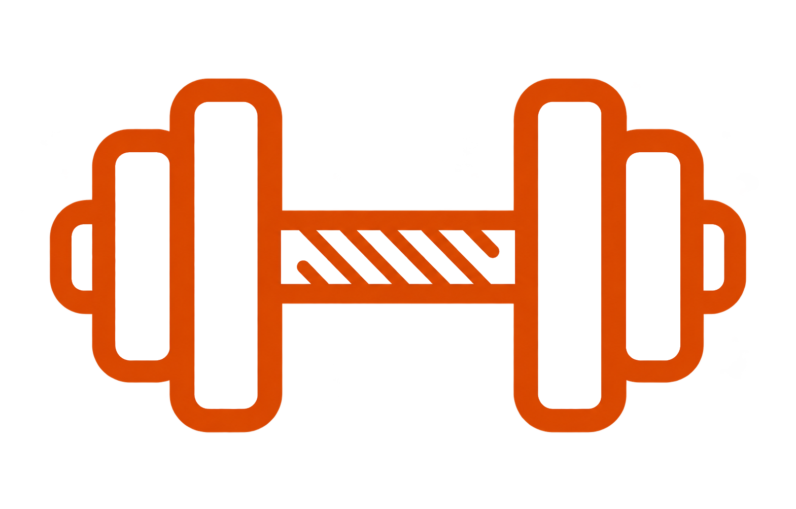
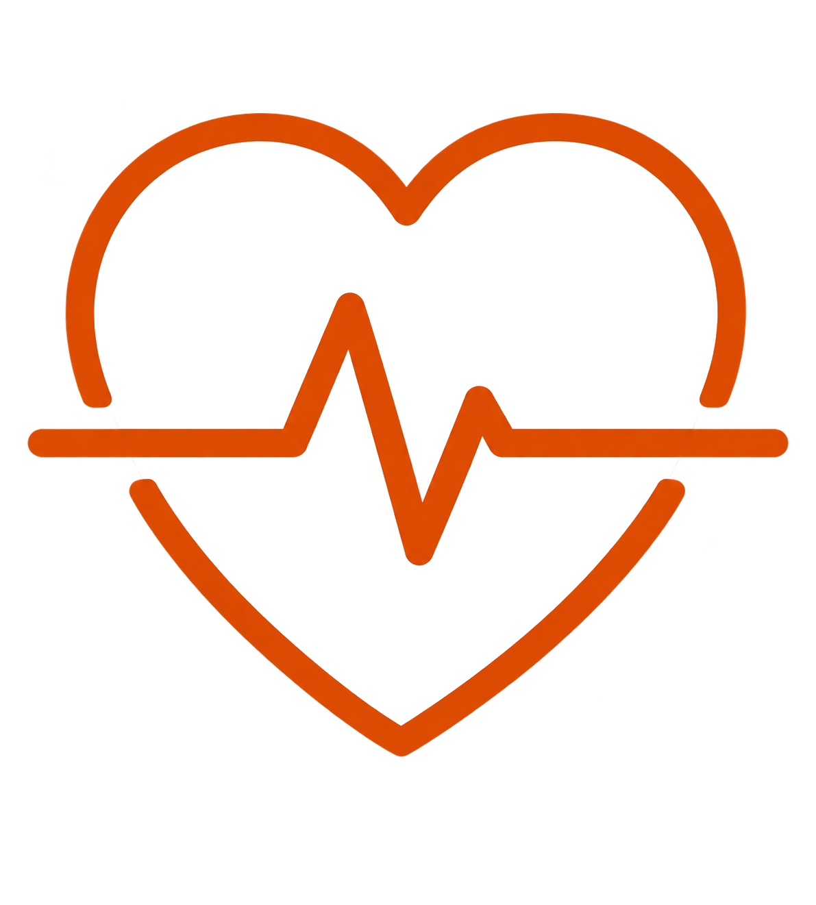
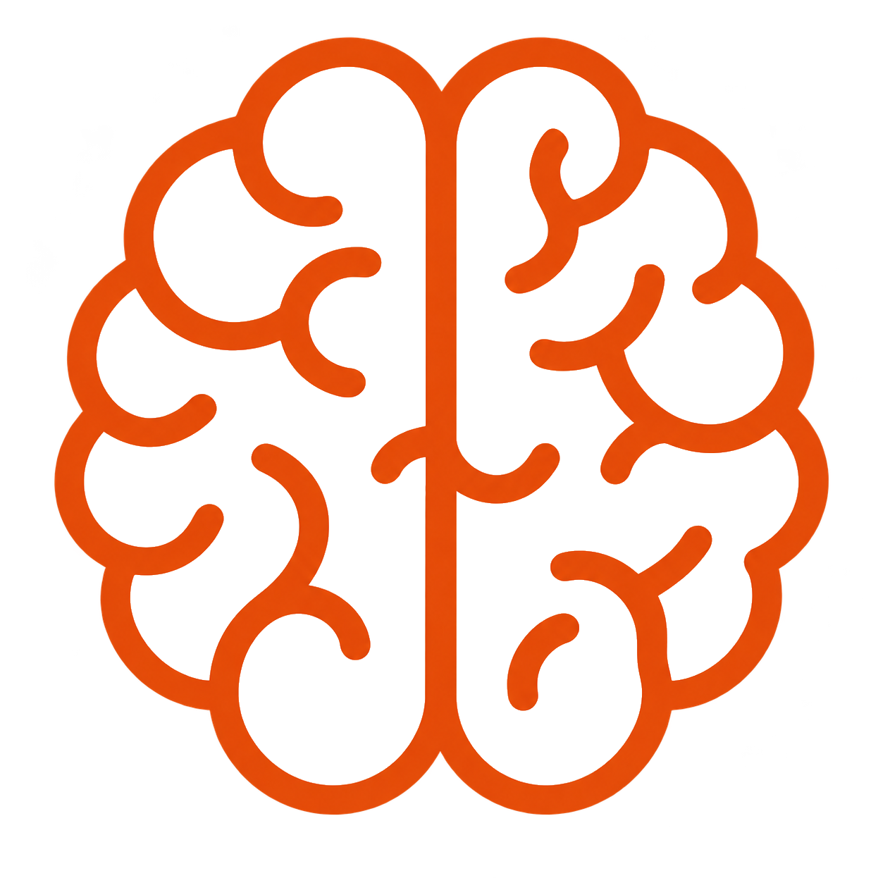
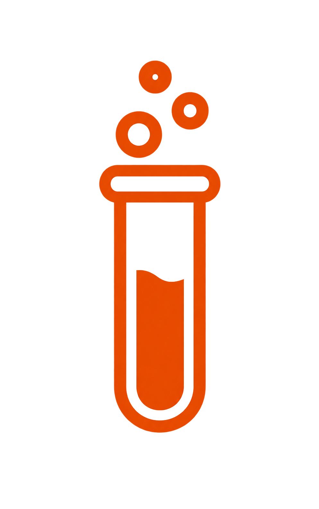

5 Motivi per iniziare ad allenarsi
Allenarsi aiuta a sentirsi più energici, costruire forza, prendersi cura della salute, scaricare la tensione e raggiungere nuovi obiettivi. Per approfondire Scopri di più

Quali benefici apporta la sala pesi al corpo?
Un programma con i pesi può aumentare la forza e la massa muscolare e contribuire alla salute di ossa e articolazioni. Scopri di più

Quali sono le relazioni tra la mente, corpo e allenamento?
L'attività fisica coinvolge anche la mente: può favorire il buonumore, aiutare a gestire lo stress e migliorare la qualità del sonno. Scopri di più

Studi che dimostrano i vantaggi a lungo termine
Le ricerche associano l'attività fisica regolare a benefici per la salute e il benessere nel tempo. Scopri di più
Chi si dedica alla scienza o ad altre attività
intellettuali, deve coltivare anche il corpo tramite
l'allenamento fisico, mentre chi si dedica a coltivare
il corpo, deve coltivare anche la mente e l'anima.
-
Platone
5 Motivi per iniziare ad allenarsi
Ci sono tanti buoni motivi per inserire il movimento nella propria settimana, senza dover essere già allenati o particolarmente sportivi. Il primo motivo è prendersi cura della salute. Muoversi con regolarità aiuta a mantenere il corpo attivo e a sviluppare resistenza. Anche le attività quotidiane possono diventare più semplici quando ci si sente più allenati. Camminare, salire le scale o giocare con i propri figli richiede energia. Allenarsi con gradualità può aiutare a sentirsi più preparati a queste attività. Un secondo motivo è diventare più forti. Esercizi scelti in base alle proprie capacità permettono di allenare diversi gruppi muscolari. La forza non serve soltanto nello sport, ma anche nei piccoli gesti di ogni giorno. Sollevare una borsa o spostare un oggetto può risultare più agevole con il tempo. Un terzo motivo è interrompere la sedentarietà. Trascorrere molte ore seduti è comune, soprattutto durante il lavoro o lo studio. Fare movimento offre una pausa attiva e invita a cambiare posizione e ritmo. Anche una breve passeggiata può essere un modo semplice per iniziare. Non occorre trasformare subito tutta la giornata. Si può partire da un'attività sostenibile, da ripetere con costanza durante la settimana. Un quarto motivo è dedicare tempo a sé. L'allenamento può diventare uno spazio personale, lontano per un momento dagli impegni quotidiani. Concentrarsi sui movimenti aiuta a restare presenti e a fare una pausa mentale. Alcune persone trovano nell'attività fisica un'occasione per scaricare la tensione accumulata. L'esperienza è diversa per ciascuno, ma può essere piacevole e gratificante. Il quinto motivo riguarda la soddisfazione di raggiungere obiettivi concreti e realistici. Completare una sessione o imparare un esercizio può dare un senso di progresso. Annotare i risultati aiuta a riconoscere i miglioramenti che altrimenti passerebbero inosservati. I progressi non si misurano soltanto aumentando i pesi o correndo più velocemente. Anche sentirsi più sicuri nei movimenti è un risultato importante da valorizzare. Allenarsi con altre persone può rendere l'esperienza più piacevole e motivante. Un corso offre una routine organizzata e permette di condividere un obiettivo comune. Anche un amico può aiutare a mantenere un appuntamento dedicato al movimento. Non è però necessario allenarsi in gruppo: si può scegliere la modalità preferita. La scelta dell'attività dovrebbe tenere conto dei propri gusti e delle proprie possibilità. Camminare, nuotare, ballare o usare i pesi sono opzioni diverse, tutte da valutare. È più facile continuare quando l'attività è piacevole e compatibile con la propria vita. Orari, spostamenti e impegni familiari possono influenzare la scelta del programma. Per questo conviene pianificare sessioni realistiche, evitando di fissare obiettivi troppo ambiziosi. All'inizio è normale avere bisogno di tempo per prendere confidenza con gli esercizi. La tecnica va imparata con calma, chiedendo aiuto se qualcosa non è chiaro. Aumentare gradualmente l'impegno permette di ascoltare le risposte del proprio corpo. La stanchezza dopo una sessione può capitare, ma dolore intenso o persistente va considerato. In questi casi è meglio fermarsi e chiedere un parere qualificato. Il riposo non rappresenta una rinuncia e fa parte di un percorso equilibrato. Alternare attività e recupero aiuta a rendere la routine più sostenibile. Anche la costanza non significa allenarsi ogni giorno senza mai fare pause. Significa trovare un ritmo che si riesce a mantenere nel corso delle settimane. I cambiamenti duraturi raramente arrivano da una singola seduta molto impegnativa. Si costruiscono invece attraverso abitudini ripetute e adattate nel tempo. Se una settimana è più complicata, si può riprendere senza colpevolizzarsi. Ogni occasione per muoversi può essere un passo utile verso il proprio obiettivo. Con pazienza, il movimento può diventare una parte naturale della vita quotidiana. La motivazione può variare da un giorno all'altro, ed è del tutto normale. Una routine semplice aiuta a non dipendere soltanto dall'entusiasmo iniziale. Preparare in anticipo abiti e orario può rendere più facile cominciare. Anche scegliere un luogo comodo riduce gli ostacoli pratici all'allenamento. L'obiettivo non è essere perfetti, ma trovare un percorso personale e fattibile. Iniziare con poco è meglio che aspettare il momento ideale. Il primo passo può essere breve, purché sia adatto alle proprie esigenze. Col tempo si potrà decidere se aumentare la durata o la frequenza. Prendersi cura di sé è un percorso, non una gara con gli altri. I cinque motivi possono essere diversi per ogni persona e in ogni fase della vita. L'importante è riconoscere ciò che rende il movimento significativo per sé. Con obiettivi realistici e un po' di pazienza, allenarsi può diventare una buona abitudine.
Quali benefici apporta la sala pesi al corpo?
La sala pesi offre la possibilità di allenare la forza attraverso esercizi differenti. Si possono usare macchine, manubri, bilancieri o il peso del proprio corpo. Ogni attrezzo permette di eseguire movimenti con caratteristiche e livelli diversi. Gli esercizi vanno scelti in base agli obiettivi e all'esperienza personale. Chi è alle prime armi può cominciare con movimenti semplici e carichi leggeri. La tecnica corretta è importante prima di aumentare l'intensità. Imparare il gesto con calma aiuta a controllare meglio ogni ripetizione. Un professionista può mostrare come regolare le macchine e gli attrezzi. Può anche suggerire varianti accessibili alle capacità di chi si allena. Con una pratica regolare, gli esercizi possono aiutare a sviluppare forza. Nel tempo può aumentare anche la massa muscolare, secondo il programma seguito. Questi cambiamenti sono graduali e dipendono da molte caratteristiche individuali. Età, esperienza, recupero e alimentazione possono influire sui risultati ottenuti. La forza è utile anche fuori dalla palestra e dallo sport. Portare la spesa o spostare oggetti sono esempi di gesti quotidiani. Anche alzarsi da una sedia richiede coordinazione e forza. Allenare il corpo può sostenere la capacità di affrontare queste attività. Gli esercizi coinvolgono gruppi muscolari diversi. Gambe e glutei partecipano a molti movimenti che richiedono stabilità e spostamento. Schiena e braccia aiutano a tirare, sollevare e controllare gli oggetti. I muscoli del tronco contribuiscono alla stabilità durante numerosi esercizi. Un programma equilibrato considera il corpo nel suo insieme. Non è necessario allenare ogni muscolo con moltissimi esercizi in una sola seduta. La selezione può essere semplice e costruita in modo progressivo. L'allenamento di resistenza è studiato anche per il suo rapporto con la salute ossea. Mantenere muscoli attivi e funzionali può essere utile in diverse fasi della vita. La mobilità e il controllo del movimento sono aspetti da considerare insieme alla forza. Una buona esecuzione richiede attenzione alla postura e all'ampiezza del gesto. Il movimento dovrebbe restare controllato, senza slanci non necessari. Respirare con regolarità durante l'esercizio aiuta a mantenere la concentrazione. Trattenere il fiato a lungo non è necessario nella maggior parte dei casi. Prima di iniziare una sessione, è utile preparare il corpo al lavoro. Un riscaldamento adatto può includere movimenti leggeri e specifici per l'allenamento. Le prime serie possono essere svolte con un carico contenuto. In questo modo si prende confidenza con il gesto previsto. Il carico va scelto con attenzione e non deve compromettere la tecnica. Se l'esercizio diventa incontrollato, può essere opportuno ridurre l'impegno. Il recupero tra le serie permette di prepararsi al lavoro successivo. I tempi possono variare in base all'esercizio e all'obiettivo della sessione. Anche i giorni senza pesi possono contribuire a una programmazione equilibrata. Dormire e recuperare sono aspetti che accompagnano il lavoro svolto. I progressi si possono osservare in modi diversi e non solo sul peso. Si può notare una migliore tecnica, più controllo o maggiore facilità nei movimenti. A volte si riesce a completare qualche ripetizione in più con lo stesso carico. In altri momenti si impara a usare un attrezzo in modo più sicuro. Tenere traccia degli allenamenti può aiutare a valutare questi cambiamenti. Non è necessario confrontare i risultati con quelli di altre persone. Ogni percorso parte da condizioni e obiettivi differenti. Aumentare il carico gradualmente è preferibile a fare salti improvvisi. Una programmazione adeguata tiene conto di frequenza, volume e recupero. Chi ha poca esperienza può chiedere indicazioni a un istruttore qualificato. Chi presenta condizioni mediche particolari dovrebbe chiedere consiglio al proprio medico. Dolore acuto o persistente non va ignorato. Fermarsi e chiedere un parere può aiutare a capire come procedere. La sala pesi non è una gara e non richiede risultati immediati. Con pazienza e attenzione alla tecnica, può diventare uno strumento utile. Un programma realistico e personalizzato aiuta a mantenere la continuità. La cosa più importante è allenarsi in modo adatto alle proprie possibilità.
Quali sono le relazioni tra la mente, corpo e allenamento?
Mente e corpo non sono dimensioni separate. Quello che facciamo con il corpo può influire anche sul modo in cui ci sentiamo. Allo stesso tempo, il nostro stato mentale può cambiare la voglia di muoverci. Una giornata stressante può rendere più difficile iniziare un allenamento. In altri momenti, fare attività può offrire una pausa dalla routine. Durante una sessione si può prestare attenzione al respiro e ai gesti. Questa attenzione aiuta a percepire come si muove il proprio corpo. Alcune persone apprezzano il ritmo regolare di una camminata o di una corsa. Altre preferiscono esercizi di forza, sport di squadra o attività di gruppo. Non esiste una sola scelta giusta per tutti. Il piacere dell'attività può influire sulla voglia di continuare nel tempo. Muoversi con regolarità può accompagnarsi a una sensazione di maggiore benessere. Per alcune persone può favorire un tono dell'umore più positivo. L'attività fisica può essere un modo per affrontare la tensione quotidiana. Gli effetti non sono uguali per ogni persona e in ogni situazione. È meglio considerare l'esercizio come una parte di uno stile di vita equilibrato. Un allenamento non deve diventare un obbligo o una fonte di ulteriore stress. Gli obiettivi dovrebbero essere realistici, flessibili e adatti alle proprie giornate. Anche una sessione breve può rappresentare un'occasione per muoversi. La soddisfazione può arrivare dall'aver rispettato un impegno personale. Imparare un esercizio nuovo può dare un senso di conquista. Raggiungere un piccolo traguardo può aiutare a rafforzare la fiducia. È utile concentrarsi sui progressi individuali invece che sul confronto. Ogni corpo ha tempi e capacità che meritano rispetto. L'allenamento può anche avere una dimensione sociale. Un corso o una passeggiata condivisa permettono di stare in compagnia. Per qualcuno questo rende più piacevole l'attività fisica. Per altri, allenarsi da soli è un momento di tranquillità. Si può sperimentare e scegliere ciò che fa sentire a proprio agio. Il movimento può aiutare a costruire una routine quotidiana più regolare. Stabilire orari accessibili rende più semplice organizzarsi. Preparare in anticipo un piano può ridurre l'indecisione. La routine deve però lasciare spazio agli imprevisti e al recupero. La stanchezza varia nel corso della settimana e delle stagioni. Ascoltare i segnali del corpo aiuta a regolare l'intensità. Riposarsi quando serve non significa perdere i progressi. Il recupero è una componente normale di ogni percorso. Anche il sonno e l'alimentazione contribuiscono al benessere complessivo. L'esercizio non può sostituire queste altre abitudini importanti. Una sessione troppo intensa non è necessariamente più efficace. La regolarità è spesso più sostenibile degli sforzi occasionali. Si può iniziare con attività leggere e aumentare con calma. Camminare è una possibilità accessibile per molte persone, se compatibile con la salute. Il ballo unisce movimento e musica in una forma espressiva. Il nuoto permette di muoversi in un ambiente diverso dalla palestra. Gli esercizi con i pesi possono offrire obiettivi concreti e misurabili. Ognuna di queste attività può essere adattata alle preferenze personali. Cambiare attività ogni tanto può aiutare a mantenere vivo l'interesse. È comunque possibile seguire una disciplina preferita per lungo tempo. La scelta migliore è quella che si riesce a mantenere con serenità. Quando ci si allena in gruppo, è importante rispettare i propri limiti. Non occorre tenere il passo di chi ha più esperienza. Chiedere una modifica dell'esercizio è una scelta responsabile. Se una sensazione di dolore compare durante il movimento, va ascoltata. Se il disagio persiste, è opportuno chiedere consiglio qualificato. L'attività fisica può sostenere il benessere, ma non è una cura universale. Non sostituisce un percorso di supporto psicologico o medico. In caso di difficoltà persistenti, rivolgersi a un professionista è importante. Ogni persona può costruire un rapporto diverso con l'esercizio. A volte serve tempo per trovare un'attività gradita. La curiosità può essere un buon punto di partenza. Provare con calma nuove possibilità aiuta a scoprire le proprie preferenze. L'obiettivo è integrare il movimento senza trascurare gli altri bisogni. Corpo e mente possono così essere sostenuti da abitudini equilibrate. Fare spazio al movimento è un modo per prendersi cura di sé.
Studi che dimostrano i vantaggi a lungo termine
La ricerca scientifica studia da tempo il rapporto tra movimento e salute. Sono stati analizzati gruppi diversi e modalità di attività differenti. Nel complesso, le evidenze disponibili associano l'attività fisica regolare a benefici per la salute generale. I risultati riguardano aspetti della funzionalità e del benessere. È importante ricordare che un'associazione non dimostra da sola che un singolo esercizio causi ogni beneficio osservato. Gli studi possono avere metodi, durate e partecipanti diversi. Per questo le conclusioni si valutano nel loro insieme. Le raccomandazioni sanitarie si basano su molte prove disponibili. Non dipendono soltanto dal risultato di una ricerca isolata. Le indicazioni generali promuovono il movimento regolare durante la settimana. Invitano anche a ridurre lunghi periodi di inattività. Le attività aerobiche sono una delle modalità considerate. Camminare a passo sostenuto, andare in bicicletta o nuotare sono esempi di attività possibili. La scelta va adattata alle preferenze e alle condizioni individuali. Anche l'allenamento di forza viene preso in considerazione. Può contribuire al mantenimento della forza muscolare nel tempo. La ricerca esamina inoltre la capacità di svolgere gesti quotidiani. Portare oggetti, alzarsi e mantenere l'equilibrio sono funzioni importanti per l'autonomia. Con l'avanzare dell'età, conservare queste capacità può essere rilevante per la qualità della vita. Mobilità e forza possono essere sostenute da attività adeguate. Gli esercizi dovrebbero essere scelti considerando la persona e il contesto. Non esiste un unico programma valido per tutte le età. Le condizioni di salute, l'esperienza e le abitudini influenzano le possibilità individuali. Anche il livello iniziale è importante nella pianificazione. Chi è già attivo può avere esigenze diverse rispetto a chi riprende dopo una pausa. Una ripresa graduale aiuta a ricostruire la routine con calma. Aumentare improvvisamente volume e intensità non è necessario per iniziare. Si può cominciare con sessioni brevi e gestibili. In seguito, la durata o la frequenza possono crescere gradualmente. Alternare attività e recupero è una strategia ragionevole. Il riposo permette di distribuire meglio l'impegno nel tempo. Le pause possono variare in base al tipo di attività. Anche la regolarità conta: piccoli appuntamenti ripetuti possono essere più facili da mantenere di sforzi molto intensi ma sporadici. Le abitudini sostenibili sono importanti per proseguire. Aderire a un programma dipende anche da quanto è pratico. Luogo, orari e preferenze possono incidere sulla continuità. Per questo è utile scegliere attività accessibili. I risultati nel lungo periodo dipendono da numerosi fattori. Tra questi ci sono la frequenza e l'intensità dell'attività. Contano anche il recupero, le condizioni personali e la costanza. Le risposte individuali possono essere diverse. Un programma va quindi considerato in modo flessibile. La ricerca non promette gli stessi risultati per tutti. Descrive tendenze generali osservate in specifici gruppi e contesti. Per interpretare un risultato bisogna considerare come è stato ottenuto. È utile sapere chi ha partecipato, per quanto tempo e con quali misure. Le conclusioni vanno lette insieme ai limiti dello studio. Per indicazioni pratiche, è meglio fare riferimento alle raccomandazioni di enti sanitari affidabili. Queste indicazioni sono aggiornate alla luce delle prove disponibili. Non sostituiscono una valutazione specifica delle necessità di ciascuno. In presenza di patologie, sintomi o dubbi sull'esercizio, è opportuno chiedere consiglio al medico. Un professionista qualificato può aiutare a scegliere esercizi appropriati. Può suggerire un carico adatto all'esperienza e alle capacità. Anche la supervisione iniziale può essere utile per apprendere la tecnica. L'obiettivo è rendere l'attività sicura e sostenibile. Le evidenze disponibili sostengono il valore del movimento regolare, ma è importante evitare semplificazioni. Nessun singolo allenamento garantisce da solo una salute perfetta. Il movimento è una componente di uno stile di vita più ampio. Alimentazione equilibrata, sonno e assistenza sanitaria sono importanti. Considerare insieme questi aspetti offre una prospettiva più completa. Nel tempo, la continuità permette di mantenere una routine attiva. Il programma può cambiare quando cambiano obiettivi o condizioni. Un approccio graduale e informato aiuta a proseguire con fiducia. Le ricerche continuano ad approfondire come adattare le attività a persone diverse. Le conoscenze possono evolvere man mano che emergono nuove prove. Per questo è utile affidarsi a informazioni aggiornate e attendibili. Il messaggio generale resta quello di scegliere un movimento adeguato, praticarlo con regolarità e rispettare le proprie possibilità.